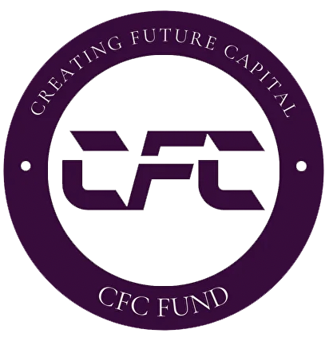
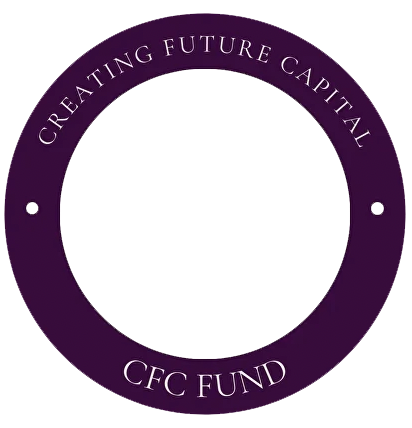

Naše investiční strategie vycházejí z vašich cílů a jsou plně přizpůsobeny vašim potřebám

CFC je regulovaný investiční fond zaměřený na vytváření dlouhodobé hodnoty prostřednictvím strategické kombinace strukturovaných akvizic a organických investic. Naší silnou stránkou je identifikace jedinečných tržních příležitostí, díky nimž budujeme diverzifikované portfolio podporující udržitelný růst a vyvážený poměr rizika a výnosu.
V CFC klademe důraz na transparentnost a dodržování regulatorních požadavků. Náš tým zkušených investičních profesionálů využívá hluboké analýzy trhu a strategického přístupu při rozhodování, čímž vytváří dlouhodobá partnerství a přináší atraktivní výnosy pro naše klienty.
Let zkušeností ve finančním sektoru
Cílový objem spravovaných aktiv
Důraz na regulatorní compliance
V CFC Fund se zaměřujeme na strategické investice do kvalitních nemovitostí. Identifikujeme příležitosti v rezidenčních, komerčních i smíšených projektech s vysokým růstovým potenciálem. Aktivní správa a detailní analýza trhu nám umožňují zvyšovat hodnotu aktiv a dosahovat nadprůměrných výnosů.
Zaměřujeme se na investice do etablovaných společností s potenciálem růstu. Vedle kapitálu nabízíme i strategickou podporu a možnost aktivní účasti. Naším cílem jsou stabilní a dlouhodobé výnosy při řízeném riziku.
Využíváme hlubokou analýzu a tržní know-how k identifikaci perspektivních investic v oblasti akcií a komodit.
Investujeme do inovativních startupů a podporujeme podnikatele, kteří formují budoucnost. Pomáháme firmám růst a investorům těžit z jejich úspěchu.
Poskytujeme financování firmám i jednotlivcům podnikajícím v různých sektorech. Nabízíme úvěrová řešení šitá na míru.
Naše produkty pokrývají potřeby od počátečního kapitálu až po financování expanze.
Vybrané pohledy na trhy, investiční strategie a příležitosti.
How timing, structure, and asset selection define investment outcomes in regional markets.
March 2026
Why flexibility in capital design becomes critical during periods of uncertainty.
February 2026
Access, relationships, and speed as key drivers of asymmetric returns.
January 2026
Tyto webové stránky slouží pouze k informačním účelům. Nepředstavuje veřejnou nabídku investičních cenných papírů nebo jiných investičních produktů. Informace zde obsažené by neměly být chápány jako nabídka nebo výzva k nákupu, prodeji nebo jinému obchodování s investičními nástroji. Zveřejněné informace jsou poskytovány pouze pro informační účely jako doplňkový zdroj osobně předávaných informací. Neměly by být považovány za formu distribuce, reklamy, nabídky nebo doporučení ke koupi či prodeji cenných papírů nebo za jakýkoli druh finančního, investičního, právního, daňového či jiného poradenství. Na těchto webových stránkách jsou prezentovány historické výnosy investiční strategie. Tyto historické výnosy nezaručují budoucí výnosy klientů, které se mohou v budoucnu lišit v důsledku nepředvídatelných pohybů cen na finančních trzích. Společnost nepodléhá dohledu České národní banky. Služby Společnosti nejsou určeny veřejnosti. Společnost je zapsána u České národní banky v seznamu osob vykonávajících správu majetku srovnatelnou s obhospodařováním majetku podle § 15 zákona č. 240/2013 Sb. o investičních společnostech a investičních fondech v České republice (český překlad: Zákon o investičních společnostech a investičních fondech, ve znění pozdějších předpisů, § 15 zákona č. 240/2013 Sb. o investičních společnostech a investičních fondech („ZISIF“). S investováním jsou spojena určitá rizika. Hodnota investic může stoupat nebo klesat. Minulé výnosy nejsou zárukou budoucích výnosů. Neexistuje žádná záruka návratnosti původně investované částky. Investice do různých typů cenných papírů mohou v různých jurisdikcích podléhat omezením a předpisům. Každá osoba investující do cenných papírů musí dodržovat právní požadavky, které se přímo týkají investora a cenných papírů. Informace uvedené na těchto webových stránkách nezohledňují okolnosti, majetkové nebo jiné poměry, investiční strategii nebo omezení týkající se konkrétní osoby. Společnost, její promotéři, akcionáři, vedoucí pracovníci, ředitelé ani zaměstnanci nenesou žádnou odpovědnost za ztráty nebo škody způsobené použitím informací obsažených na těchto webových stránkách. Obsah těchto webových stránek se může změnit bez předchozího upozornění. Jakékoli další šíření nebo jiná neoprávněná manipulace s informacemi zde obsaženými je zakázána.
Email:
Adresa:
Kurzova 2222/16
Stodulky, 155 00 Praha 5
Prague, Czechia
Vítáme spolupráci s investory, partnery a operátory.
CFC s.r.o., osoba rizikového kapitálu.
Company ID: 217 05 011
Společnost je zapsána v obchodním rejstříku vedeném Městským soudem v Praze
Section C, Entry No. 405309

Kurzova 2222/16,
Stodulky, 155 00 Praha 5,
Prague, Czechia
CFC s.r.o., osoba rizikového kapitálu je zapsána v registru ČNB podle § 15 zákona č. 240/2013 Sb. o investičních společnostech a investičních fondech a podléhá pravidelné oznamovací povinnosti. Nepodléhá však jejímu dohledu.